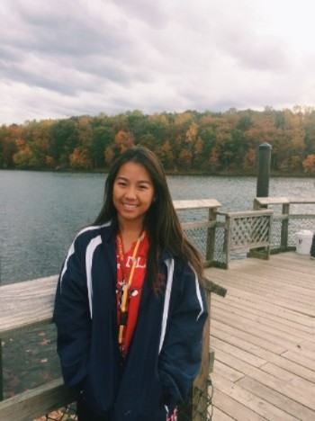

About Me

Hi! My name is Claire, and I'm a rising junior majoring in computer science Georgia Tech. I'm currently a STEP intern, and working from Maryland.
I was first introduced to computer science my freshmen year of high school. Since then, I have developed my passion for computing through internships, hackathons, and technology clubs.
My first internship was at the National Institute of Health to conduct bioinformatics research.
I was very thankful to work there, but quickly realized that I was terrible at the biology part of bioinformatics.
Last summer, I interned at State Farm as a front end software development intern, where I gained experience with Angular, HTML/CSS/Javascript, and ping pong.
In my free time, I like to paint, play tennis, and hike.
My Cat
This is my WFH colleague, Chia.
I adopted her over last December, and now she follows me on my adventures, ranging from spring semester at Georgia Tech, to interning now.
She is currently 9 months and growing bigger everyday! Some of Chia's hobbies include: napping, chasing toy mice, and staring longingly at squirrels from the window.
Chia is excited to be on board my intern experience.
She first became interested in coding when she ran across my keyboard a few months ago. Unfortunately, the lines of code she typed did not compile.
Since then, Chia has been brushing up on her coding skills by pair programming with me. She does not give much input, though.
However, she is looking forward to learning a lot this summer, and maybe one day will be able to compile her code!